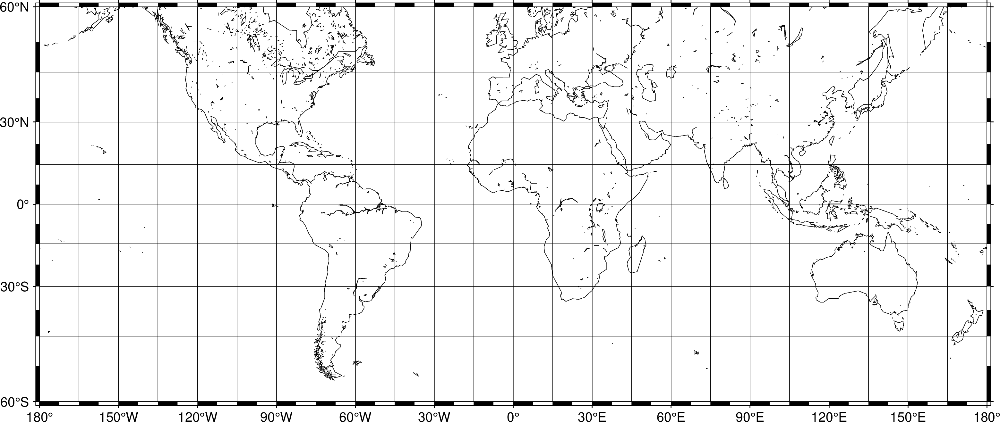

Frames, ticks, titles, and labels
Setting frame, ticks, title, etc., of the plot is handled by the -B parameter that most plotting modules contain like basemap.
Plot Frame
By default, GMT does not add a frame to your plot. For example, we can plot the coastlines of the world with a Mercator projection:
gmt begin frames png gmt coast -R-180/180/-60/60 -JM25c -W gmt end show
To add the default GMT frame style to the plot, add f to the -B.
gmt begin frames png gmt coast -R-180/180/-60/60 -JM25c -W gmt basemap -Bf gmt end show
Tick labels
In GMT the tick labels are called annotations. Add them by passing a through the -B parameter:
gmt begin frames png gmt coast -R-180/180/-60/60 -JM25c -W gmt basemap -Baf gmt end show
Gridlines
Add automatic grid lines to the plot by adding g:
gmt begin frames png gmt coast -R-180/180/-60/60 -JM25c -W gmt basemap -Bafg gmt end show
Custom annotations and intervals
To adjust the step widths of annotations, frame, and grid lines we can
add the desired step widths after a, f, or g. In the example
below, the step widths are set to 30°, 7.5°, and 15°, respectively.
gmt begin frames png gmt coast -R-180/180/-60/60 -JM25c -W gmt basemap -Ba30f7.5g15 gmt end show
Title
The figure title can be set by passing +ttitle:
gmt begin frames png gmt coast -R-180/180/-60/60 -JM25c -W gmt basemap -Bafg gmt basemap -B+t"Mercator Map" gmt end show
Subtitle
Then you can add a subtitle with +ssubtitle:
gmt begin frames png gmt coast -R-180/180/-60/60 -JM25c -W gmt basemap -Bafg gmt basemap -B+t"Mercator Map"+s"Subtitle" gmt end show